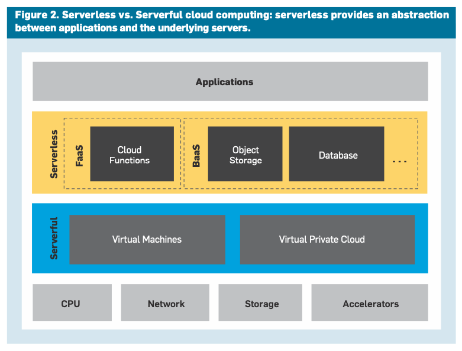
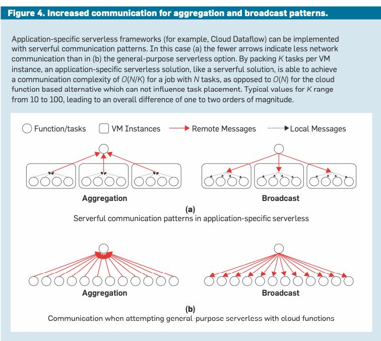

The Next Phase of Cloud Computing
What Serverless Computing Is and Should Become
云计算很大程度上改变为使用机器和运维方式，但是却没有怎么改变编程方式。serveless computing算是一个对编程方式改变有影响的领域，但是目前接受程度依然不高。 这篇文章会分析serveless后面应该怎么搞，以及对于云计算后续发展的一些预测。
关于serverless / serverful 之间的差别，作者给了一个非常形象的比喻就是出租车服务。你可以去出租车公司去自己租车(serverful)，也可以打出租车(serverless). 但是从云计算来看，他们完全可以同时提供两种服务，serverless完全可以建立他们自己的serverful服务之上。SL最大的特点（优势）是下面三个： 服务器抽象，付费模式(pay-as-you-go)，以及auto-scaling.

对于未来的云计算发力点，作者认为应该在简化SL编程这个工作上面。
The future evolution of serverless computing, and in our view of cloud computing, will be guided by efforts to provide abstractions that simplify cloud programming.
It is striking how little cloud com- puting has changed how programmers work to date, especially when com- pared to the impact it has had on oper- ators. Much of the software that runs in the cloud is the exact same software that runs in a traditional data center. Compare the programming skills most in demand today against those needed 10 years ago and you will notice that the core skill set has changed very lit- tle, even as specific technologies come and go. By contrast, the operator’s job has changed tremendously. Installing and maintaining servers, storage, and networks are largely things of the past, replaced by a focus on managing virtu- alized infrastructure through cloud provider APIs, and by the DevOps movement, which emphasizes the technical and organizational aspects of change management.
SL出来了这么长时间，为什么大家还是喜欢在服务器上编程，而不是使用无服务器编程呢？首先我们看看SL的应用场景，可以分为4块。这里以BigData应用为例，看看每块对应的SL服务是什么。
- Application-Specific (应用相关). 这块做的是比较好的，因为云厂商可以根据该应用特点做许多在SL上的优化
- Tool or component.(AWS Athena)
- Application framework. (Cloud Dataflow)
- General-Purpose 现在这块做的还不行，后面要在这上面发力
- Hints to implementation. (Affinity Hints)
- Automatic optimization. (Communication-minimizing placement)
可以看到对于GP方面，SL并没有提供恰到好处的抽象，以至于没有办法有效地进行分布式系统设计。下图是作者给的关于Agg和Broadcast的例子，可以看到如果是SF的话可以做许多优化，但是SL则无能为力。

We suggest two paths to enhancing cloud functions so that they work well in a broader range of applications, po- tentially turning them into general- purpose serverless abstractions. First, we imagine that hints provided by the programmer might indicate how to achieve better performance. Hints might describe application communi- cation patterns (for example, broad- cast or all-reduce), or suggest task placement affinity.25 Such an approach has precedent in compilers (for exam- ple, branch prediction, alignment, and prefetching hints).
Second, and more compellingly, we envision inefficiencies being removed by automatic optimization. In our ex- ample the cloud provider might prom- ise to infer locality optimizations from observed communication patterns. In some cases, such inferences might also be made statically, based on an analy- sis of the program. In the single-ma- chine context this has ample precedent in what modern compilers and lan- guage runtimes do, and one might think of this form of serverless com-puting as extending language support to distributed systems.
SL在有什么研究方面的挑战呢？
- State management. 不同的SL实例之间如何交换数据和协调
- Networking. 在cloud环境下面latency有时候会比较高
- Predicatable performance. 在Auto-scaling场景下要求可以快速启动服务器，目前google gvisor & aws firecracker可以在100ms内启动
- Security.
- Programing Languages. 编程语言和编译器
- Machine Learning.
- Hardware. 大家可以在后台用各种各样的硬件